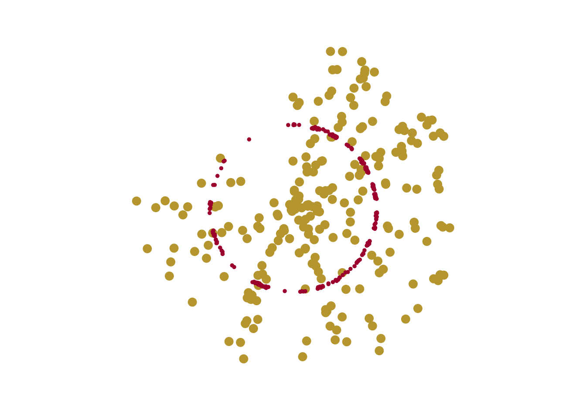

#load in packageslibrary(ggplot2)library(tibble)library(ggthemes)library(scales)library(dplyr)library(ggforce)#packages for spatial noise trickslibrary(purrr)library(ambient)#mosaic art packageslibrary(ambient)library(tidyr)#load in datampg
# A tibble: 234 × 11
manufacturer model displ year cyl trans drv cty hwy fl class
<chr> <chr> <dbl> <int> <int> <chr> <chr> <int> <int> <chr> <chr>
1 audi a4 1.8 1999 4 auto… f 18 29 p comp…
2 audi a4 1.8 1999 4 manu… f 21 29 p comp…
3 audi a4 2 2008 4 manu… f 20 31 p comp…
4 audi a4 2 2008 4 auto… f 21 30 p comp…
5 audi a4 2.8 1999 6 auto… f 16 26 p comp…
6 audi a4 2.8 1999 6 manu… f 18 26 p comp…
7 audi a4 3.1 2008 6 auto… f 18 27 p comp…
8 audi a4 quattro 1.8 1999 4 manu… 4 18 26 p comp…
9 audi a4 quattro 1.8 1999 4 auto… 4 16 25 p comp…
10 audi a4 quattro 2 2008 4 manu… 4 20 28 p comp…
# ℹ 224 more rows
doing the excersizes
mpg %>%ggplot(aes(displ, hwy, colour = drv)) +geom_jitter(show.legend =FALSE, size =3, height =1000, colour ="#C2A43C") +#make data points mustard yellowgeom_jitter(show.legend =FALSE, size =1, colour ="#AE123A", height =10) +#set height of points to create a ringcoord_polar() +#creates a coordinate plot theme_void() +scale_color_brewer()

polar_art <-function(seed, n, palette) {# set the state of the random number generatorset.seed(seed)# data frame containing random values for # aesthetics we might want to use in the art dat <-tibble(x0 =runif(n),y0 =runif(n),x1 = x0 +runif(n, min =-.2, max = .2),y1 = y0 +runif(n, min =-.2, max = .2),shade =runif(n), size =runif(n) )# plot segments in various colours, using # polar coordinates and a gradient palette dat |>ggplot(aes(x = x0,y = y0,xend = x1,yend = y1,colour = shade,size = size )) +geom_segment(show.legend =FALSE) +coord_polar() +scale_y_continuous(expand =c(0, 0)) +scale_x_continuous(expand =c(0, 0)) +scale_colour_gradientn(colours = palette) +scale_size(range =c(0, 10)) +theme_void()}polar_art(seed =5, n =60, palette =c("#004949", "#005000", "#007A99"))
polar_art_02.R <-function(seed, n, palette) {# set the state of the random number generatorset.seed(seed)# data frame containing random values for # aesthetics we might want to use in the art dat <-tibble(x0 =runif(n),y0 =runif(n),x1 = x0 +runif(n, min =-.4, max = .4),y1 = y0 +runif(n, min =-.4, max = .4),shade =runif(n), size =runif(n) )# plot segments in various colours, using # polar coordinates and a gradient palette dat |>ggplot(aes(x = x0,y = y0,xend = x1,yend = y1,colour = shade,size = size )) +geom_segment(show.legend =FALSE) +coord_polar() +scale_y_continuous(expand =c(0, 0)) +scale_x_continuous(expand =c(0, 0)) +scale_colour_gradientn(colours = palette) +scale_size(range =c(0, 50)) +theme_void()}polar_art(seed =5, n =1000, palette =c("#AC6A9F", "#F3A469", "#D04544"))
art <-ggplot(canvas, aes(x, y, fill = paint)) +geom_raster(show.legend =FALSE)
art
art +theme_void() +coord_equal()
art +theme_void() +coord_equal() +scale_x_continuous(expand =c(0, 0)) +scale_y_continuous(expand =c(0, 0)) +scale_fill_gradientn(colours =sample_600(n =25)) #use canvas palette created earlier
art of choice: tiles and tessellations: Voronoi
set.seed(90)dat <-tibble(x =runif(30),y =runif(30),val =runif(30))bg_dat <-tibble(x =runif(100, min =-.5, max =1.5),y =runif(100, min =-.5, max =1.5))pic <-ggplot(dat, aes(x, y, fill = val)) +coord_equal(xlim =c(-.5, 1.5), ylim =c(-.5, 1.5)) +#adjust range of the tilesguides(fill =guide_none()) +theme_void() +theme(panel.background =element_rect(fill ="#BEA037", colour ="#E2D3CE" ))pic2 <- pic +geom_voronoi_tile(data = bg_dat,fill ="#D5A7C4", radius = .02, #adjusts thickness of background wallsexpand =-.0025 ) +geom_voronoi_tile(size =3,fill ="#3C8D53", #tile color color, use colour = to create a bordermax.radius = .2, #adjusts the size of the rounded tilesradius = .02, #rounds the pointsexpand =-.006#creates little spaces between tiles )plot(pic2)
putting it all together
creating a canva color palette for art piece:
sample4<-sample_canva() show_col(sample4)
set.seed(50)dat <-tibble(x =runif(30),y =runif(30),val =runif(30))bg_dat <-tibble(x =runif(1000, min =-1.025, max =1.025),y =runif(1000, min =-.5, max =1.5))pic <-ggplot(dat, aes(x, y, fill = val)) +coord_equal(xlim =c(-.2, 0.5), ylim =c(-.2, 0.5)) +#adjust range of the tilesguides(fill =guide_none()) +theme_void() +theme(panel.background =element_rect(fill ="#4485ce", colour ="#E2D3CE" ))pic2 <- pic +geom_voronoi_tile(data = bg_dat,fill ="#f9cf00", radius = .01, #adjusts thickness of background wallsexpand =-.0004#adjusts scale of texture ) +#creates green tilesgeom_voronoi_tile(fill ="#f19f4d", #tile color color, use colour = to create a bordermax.radius = .2, #adjusts the size of the rounded tilesradius = .02,expand =-.005 )plot(pic2)
Caption: The title for this piece is “Citrus Cells” because it reminds me of both plant cells under a microscope, and a cross section of an orange (thanks to the color palette I generated). I created this piece on 06-05-2024. I was inspired by one of the sample pieces I played around with in part d, but wanted to create something on a larger scale with fewer tiles visible. To create this piece I used what I learned in part d to create code for a tile display, and changed all of the points and scales using the geom_veronoi_tile function. I then used what I learned in part c about creating randomly generated canva color palettes, and I ran my code chunk until I got a palette that I thought resembled citrus colors.
#randomly picks rectangles based on areachoose_rectangle <-function(blocks) {sample(nrow(blocks), 1, prob = blocks$area)}#selects random break pointschoose_break <-function(lower, upper) {round((upper - lower) *runif(1))}#creates a tibble with rectangles of specific coordinatescreate_rectangles <-function(left, right, bottom, top, value) {tibble(left = left,right = right,bottom = bottom,top = top,width = right - left,height = top - bottom,area = width * height,value = value )}#splits rectangles horizontally or vertically randomlysplit_rectangle_x <-function(rectangle, new_value) {with(rectangle, { split <-choose_break(left, right) new_left <-c(left, left + split) new_right <-c(left + split, right) new_value <-c(value, new_value)create_rectangles(new_left, new_right, bottom, top, new_value) })}split_rectangle_y <-function(rectangle, new_value) {with(rectangle, { split <-choose_break(bottom, top) new_bottom <-c(bottom, bottom + split) new_top <-c(bottom + split, top) new_value <-c(value, new_value)create_rectangles(left, right, new_bottom, new_top, new_value) })}split_rectangle <-function(rectangle, value) {if(runif(1) < .5) {return(split_rectangle_x(rectangle, value)) }split_rectangle_y(rectangle, value)}#split rectangles into smaller piecessplit_block <-function(blocks, value) { old <-choose_rectangle(blocks) new <-split_rectangle(blocks[old, ], value)bind_rows(blocks[-old, ], new)}subdivision <-function(ncol =1000, nrow =1000, nsplits =50, seed =NULL) {if(!is.null(seed)) set.seed(seed) blocks <-create_rectangles(left =1, right = ncol, bottom =1, top = nrow, value =0 )reduce(1:nsplits, split_block, .init = blocks)}fill_rectangle <-function(left, right, bottom, top, width, height, area, value, nshades =100) {set.seed(value) fractals <-list(billow, fbm, ridged) generators <-list(gen_simplex, gen_perlin, gen_worley)expand_grid(x = left:right, y = bottom:top, ) |>mutate(fill =10* value +fracture(x = x *sample(-3:3, 1),y = y *sample(-3:3, 1),noise =sample(generators, 1)[[1]],fractal =sample(fractals, 1)[[1]],octaves =sample(10, 1),frequency =sample(10, 1) /20,value ="distance2" ) |>normalise(to =c(1, nshades)) |>round() )}draw_mosaic <-function(dat, palette) { background <-sample(palette, 1) dat |>ggplot(aes(x, y, fill = fill)) +geom_tile(show.legend =FALSE, colour = background, size = .3) +scale_size_identity() +scale_colour_gradientn(colours = palette) +scale_fill_gradientn(colours = palette) +scale_x_continuous(expand =expansion(add =10)) +scale_y_continuous(expand =expansion(add =10)) +#size of mosaicscoord_equal() +theme_void() +theme(plot.background =element_rect(fill = background)) }#creates a mosaic plotmosaica <-function(ncol =70, nrow =60, nsplits =30, seed =NULL) {subdivision(ncol, nrow, nsplits, seed) |>pmap_dfr(fill_rectangle) |>slice_sample(prop = .995) |>filter(!is.na(fill)) |>draw_mosaic(palette =sample_canva2(seed))}#usuing mosaica function to create a mosaic with specified parameterspic_emily <-mosaica(ncol =50, nrow =90, nsplits =150, seed =1267)plot(pic_emily)
Caption: The title of this piece is “Beads” because as I created smaller and smaller tiles for the mosaic, I thought that they begin to look like beads that had been stitched into a bracelet or jewelry design. I was inspired by a pair of earrigns I bought at a street market in Mexico that depict a beaded design (which would require layign out a bead mosaic such as this before threadign them all together). This piece was created on 06-05-2024. I used elements from part c (creating canva palettes) to create the palette for this piece, and used what I learned messing around with code for the different exercises to change the shape, orientation, and scale for randomly generated decisions made by the computer (like where to split rectangles, etc.). Using the mosaica function, adjusting the ncol and nrow allows you to makes the mosaic design smaller and smaller.
# creates 400 numbers between 0 and 1 for the x-coordinatesx_coords <-seq(from =0, to =1, length.out =400) # Creates 400 numbers between 0 and 1 for the y-coordinatesy_coords <-seq(from =0, to =1, length.out =400) # Create a grid with coordinatescanvas <-long_grid(x = x_coords, y = y_coords) # Apply perlin noise function canvas <- canvas %>%mutate(paint =gen_perlin(x, y, frequency =10, seed =1234))# Display the resulting canvas with the "perlin" nose appliedcanvas
# Create a ggplot object using coordinate points# usethe 'paint' values to fillart <-ggplot(canvas, aes(x, y, fill = paint)) +# Use the geom_raster function to create a raster plotgeom_raster(show.legend =FALSE) # hide the legend
art +theme_void() +# theme with no background or axescoord_equal() +scale_x_continuous(expand =c(0, 0)) +scale_y_continuous(expand =c(0, 0)) +scale_fill_gradientn(colours =sample_600(60)) # reuse sample 600 function to grab a bunch of colors
caption: The title of this piece is “Kaleidoscope Colors”, and was created on 06-05-2024. I was inspired by the tutorial on art from code, and enjoyed playing around with the the number of colors applied to scale_fill_gradientn (which drastically changes the selection of colors used), and the level of definition in the swirly layers. I used sample_600 (which I created in part c) from the canva tutorial for colors, and the knowledge I had from creating my other art pieces about changing scale, adn coordinate points (that create the outline for the piece).